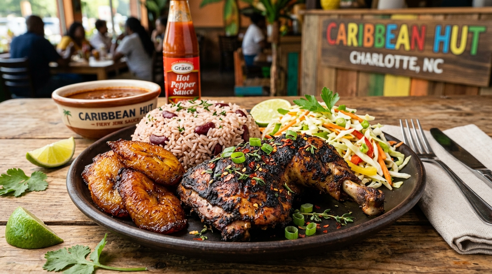

1. Hand-Pinched Dim Sum
Rolling tender wheat flour wrappers by hand and stuffing them with ginger-infused pork and spring scallions, cooked fresh to order.
Authentic Asian fusion demands precise heat control and respectful technique. At Persuasian, our kitchen honors time-tested Asian traditions: hand-pinching dumplings daily, simmering slow-infused chili oils with fragrant Szechuan peppercorns, and searing entrees at 600°F to unlock true "wok hei" breath.

Rolling tender wheat flour wrappers by hand and stuffing them with ginger-infused pork and spring scallions, cooked fresh to order.
Steeping roasted red chili flakes, toasted star anise, garlic cloves, and fragrant Szechuan peppercorns in hot oil for deep complexity without harsh heat.
Quickly searing meats and crisp garden vegetables over roaring flames to caramelize sauces while locking in maximum texture and vibrancy.